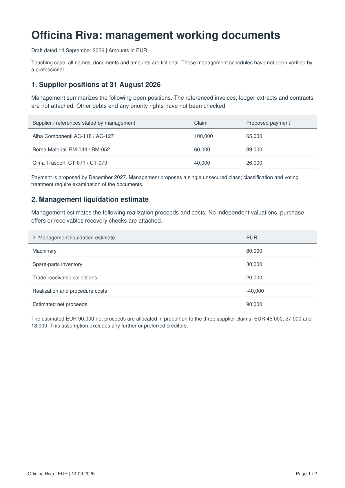
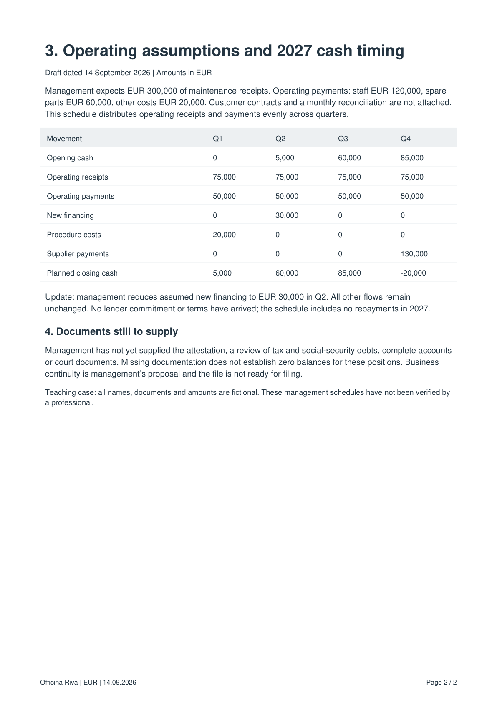

Lesson input file
management-practice-en.pdf
files/practice/management-practice-en.pdf
Read the contents of the file supplied for this lesson. The workflow uses the original file; this page is only a reading view.


Lesson input file
files/practice/management-practice-en.pdf
Read the contents of the file supplied for this lesson. The workflow uses the original file; this page is only a reading view.

